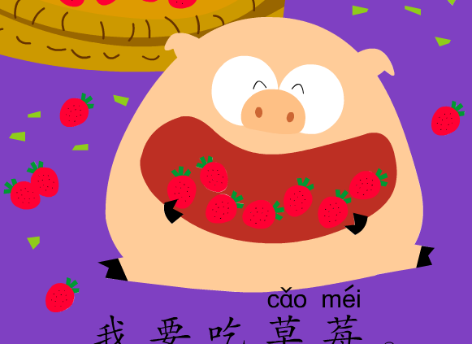

第 | 八 | 课 | 我 | 饿 | 了 | |
dì | bā | kè | wǒ | è | le |
Part I Vocabulary
苹 | 果 |
píng | guǒ |
香 | 蕉 |
xiāng | jiāo |
梨 |
lí |
草 | 莓 |
cǎo | méi |
葡 | 萄 |
pú | táo |
西 | 瓜 |
xī | guā |
饿 |
è |
吃 |
chī |
要 |
yào |
要 |
yào |

苹 | 果 |
píng | guǒ |
香 | 蕉 |
xiāng | jiāo |
梨 |
lí |
草 | 莓 |
cǎo | méi |
葡 | 萄 |
pú | táo |
西 | 瓜 |
xī | guā |
饿 |
è |
吃 |
chī |
要 |
yào |
要 |
yào |
苹 | 果 |
píng | guǒ |
香 | 蕉 |
xiāng | jiāo |
梨 |
lí |
草 | 莓 |
cǎo | méi |
葡 | 萄 |
pú | táo |
西 | 瓜 |
xī | guā |
饿 |
è |
吃 |
chī |
要 |
yào |
要 |
yào |
Part II Phrase
吃 | 苹 | 果 |
chī | píng | guǒ |
吃 | 香 | 蕉 |
chī | xiāng | jiāo |
吃 | 梨 |
chī | lí |
吃 | 草 | 莓 |
chī | cǎo | méi |

吃 | 葡 | 萄 |
chī | pú | táo |
吃 | 西 | 瓜 |
chī | xī | guā |
要 |
yào |
要 |
yào |
要 | 吃 | 苹 | 果 |
yào | chī | píng | guǒ |
要 | 吃 | 香 | 蕉 |
yào | chī | xiāng | jiāo |
要 | 吃 | 梨 |
yào | chī | lí |
要 | 吃 | 草 | 莓 |
yào | chī | cǎo | méi |
要 | 吃 | 葡 | 萄 |
yào | chī | pú | táo |
还 | 要 | 吃 | 西 | 瓜 |
hái | yào | chī | xī | guā |
Part III Sentence
我 | 要 | 吃 | 苹 | 果 |
wǒ | yào | chī | píng | guǒ |
我 | 要 | 吃 | 香 | 蕉 |
wǒ | yào | chī | xiāng | jiāo |
我 | 要 | 吃 | 梨 |
wǒ | yào | chī | lí |
我 | 要 | 吃 | 草 | 莓 |
wǒ | yào | chī | cǎo | méi |
我 | 要 | 吃 | 葡 | 萄 |
wǒ | yào | chī | pú | táo |
我 | 还 | 要 | 吃 | 西 | 瓜 |
wǒ | hái | yào | chī | xī | guā |
我 | 吃 | 不 | 下 | 了 |
wǒ | chī | bù | xià | le |